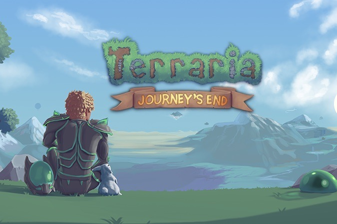

The End of the Journey - The Beginning for Terraria: Journey's End Out Now!

Happy Launch Day, Terrarians... and welcome to Journey's End!
This update has been a labor of love, tirelessly worked on by our team over a good while, and we truly feel that it brings Terraria to the next level, to a place where the core game can finally be called "complete".
From new ways to play the game to over 1000 new items to find and craft to new bosses to challenge and even a full-pass review of all content of the game for balance, graphic quality, and mechanics - truly, Journey's End has something for everyone. We cannot wait to see your reactions as you dive in to all that this update has to offer, and we hope that you thoroughly enjoy our gift to you. It has been an amazing journey indeed... but we truly feel that this end is really just a new beginning for the amazing world of Terraria.
So, what awaits you in Journey's End? In case you missed our advance Terraria: Journey's End Changelog post last Thursday, we have linked it below for your reading pleasure. Also located in today's post are where and how to report bugs as well as other important information that you may find interesting.
THERE & BACK AGAIN: A SUMMARY OF TERRARIA: JOURNEY'S END (OFFICIAL CHANGELOG)
The Journey's End changelog is simply too massive to post here (seriously, just the text alone is over 45 pages long!), so we have created an organized and easily-navigated version over on our Forums. Click the link above to head there and check it out!
TERRARIA: JOURNEY'S END BUG/ISSUE REPORTING
Having an issue? Found a nasty bug that you want us to squash? We are here for you!
While the team will be searching far and wide all over the Community, the best place to report bugs is over on TCF!
Last updated on: 2020/5/17 上午1:18:16